Red frame = the printed face. Label = where the animation comes from, then when the pet plays it.
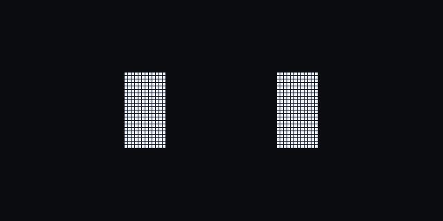
Claude Code idle, all the time
Claude Code idle, now and then
Claude Code session started
Claude Code celebration
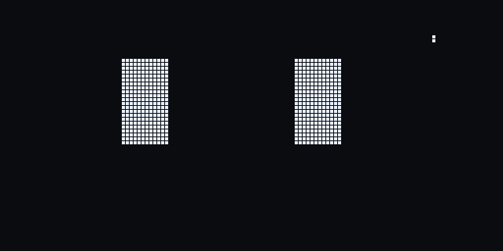
Claude Code spinner you sent a prompt
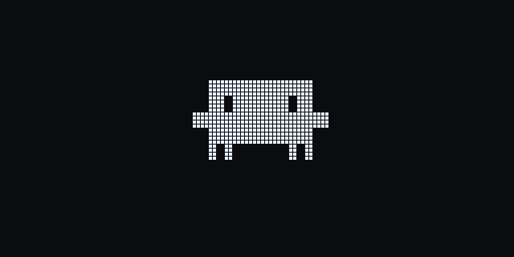
Claude Code turn frames tapped twice
Claude Code arm poses you sit down / first session
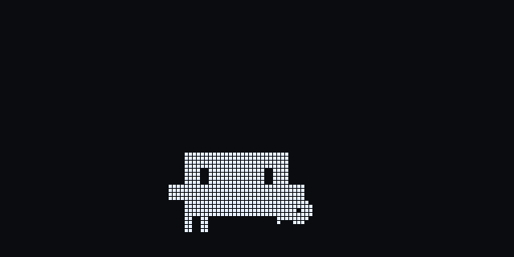
new long idle, just for fun
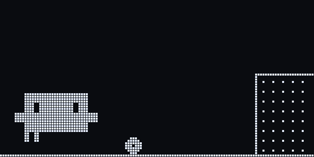
new a big task finished
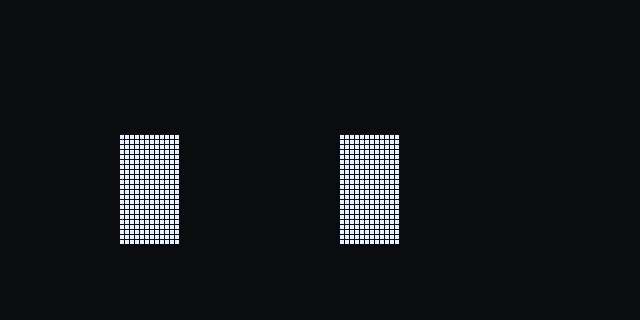
new idle, now and then
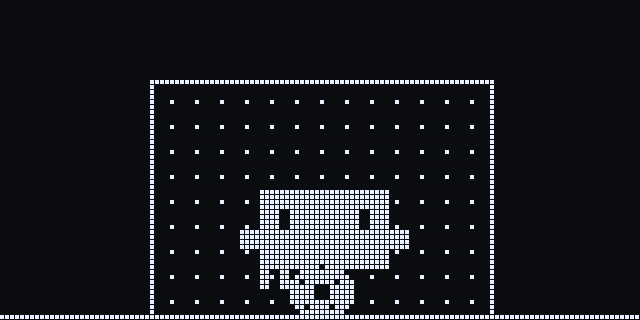
new you stopped Claude just in time (Esc)
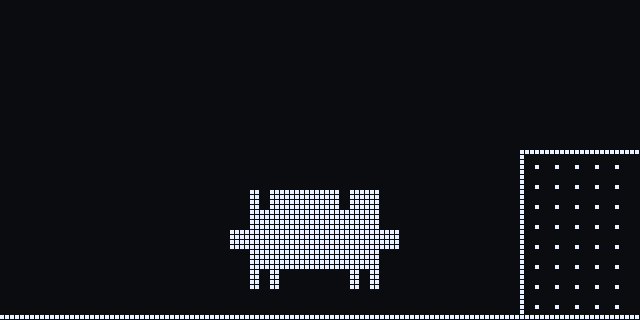
new a quick task finished
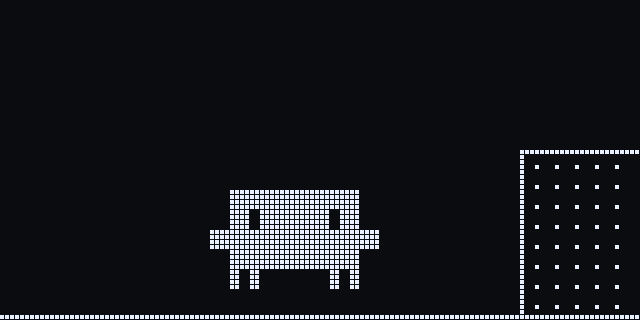
new a hard task finished first try
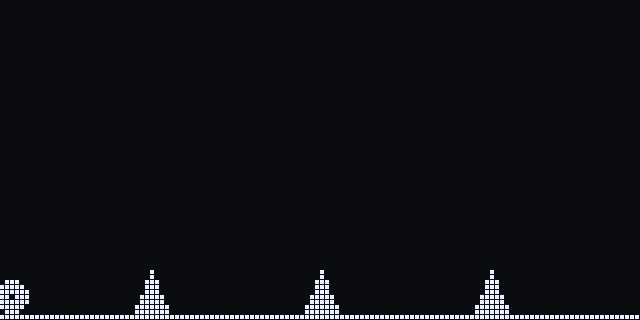
new Claude is editing many files
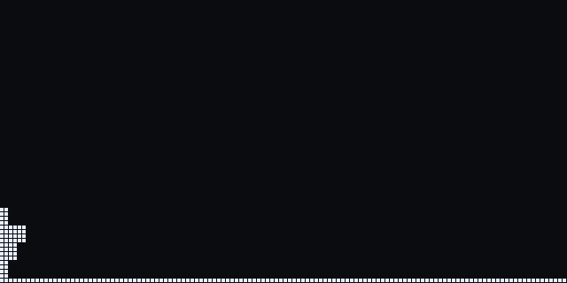
new a PR merged
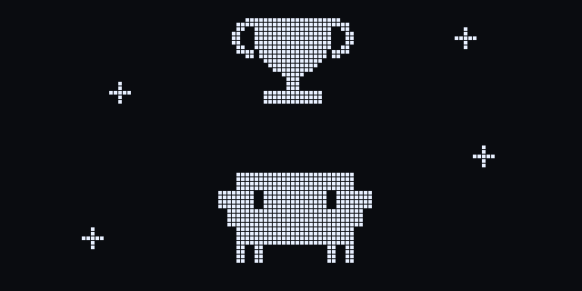
new a release / a big milestone
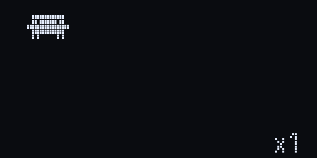
new one mini Clawd per running subagent, passing the ball
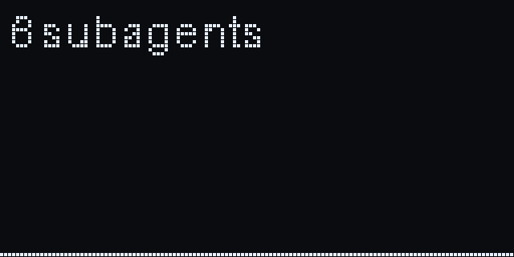
new a batch of subagents starts
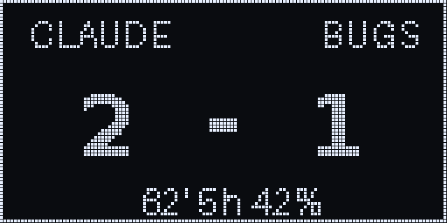
new your session as a match: tasks done vs bugs
new a warning, lint failed
new tests failed / build broke
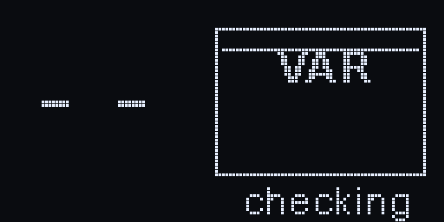
new Claude is waiting for your permission
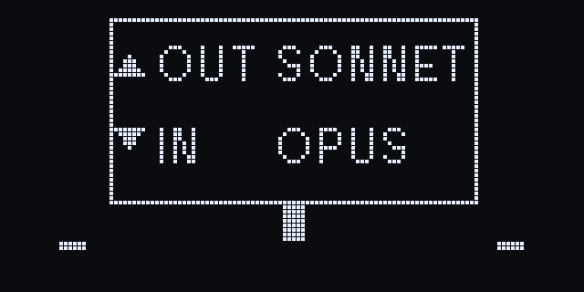
new model switched, or a subagent joins
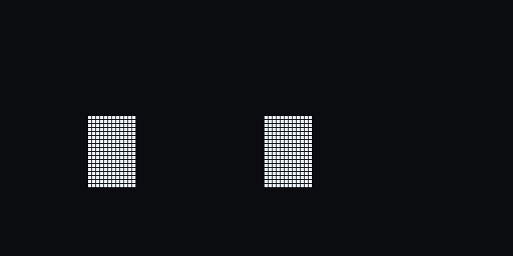
new 5 hour limit nearly used
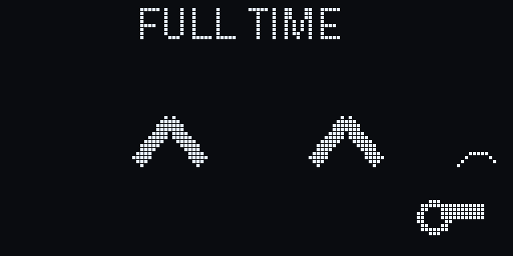
new usage limit reset
new touch pad on the head
new tapped quickly a few times
new you say thanks to Claude
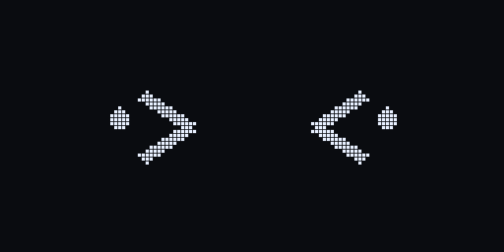
new a joke lands / long touch
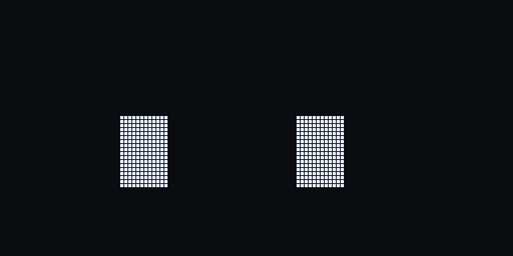
new Claude is running tools
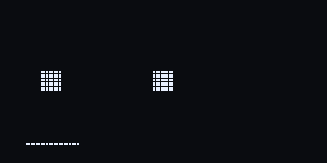
new Grep / Glob running
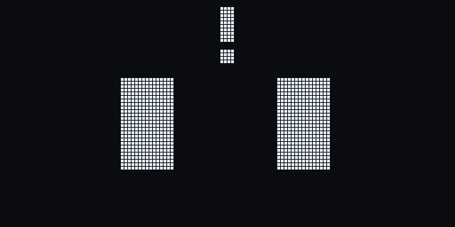
new Claude is waiting for permission
new Claude finished
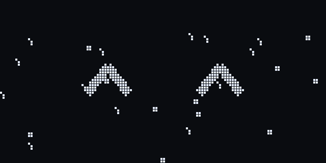
new git commit / PR merged
new no session for a while
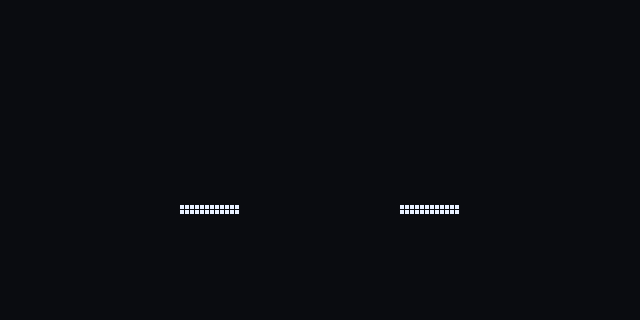
new first prompt after sleeping
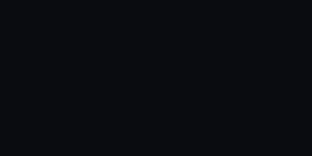
new idle, now and then
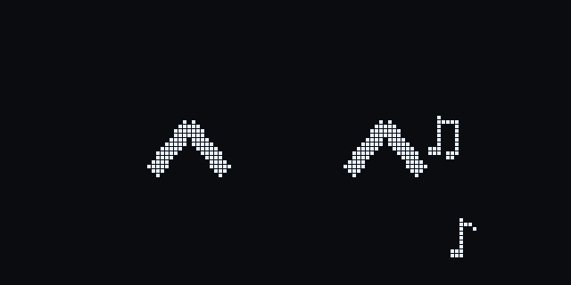
new session open, nothing running
new an interrupt
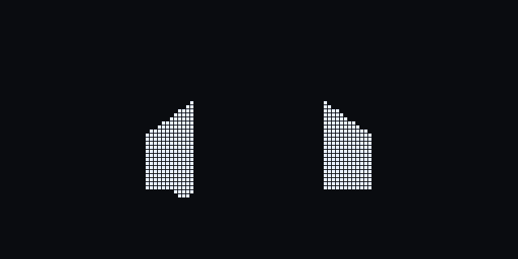
new a task failed
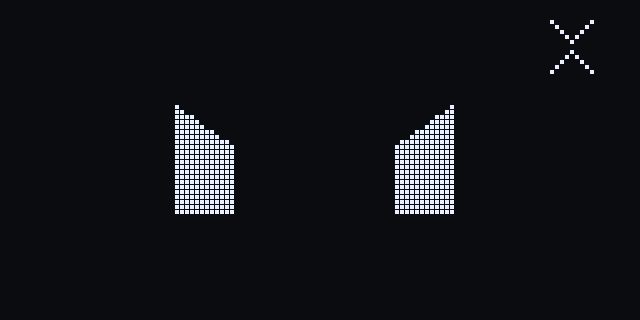
new tests failing again
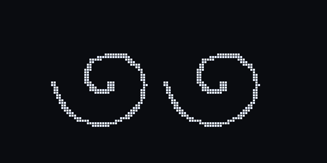
new many retries in a row
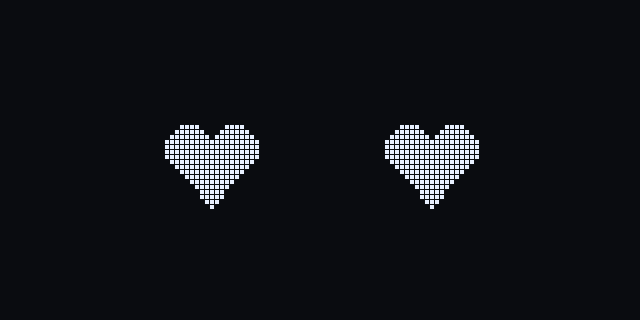
new touch held for 2 seconds
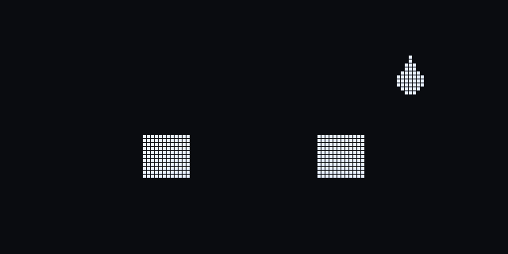
new a usage limit above 80%
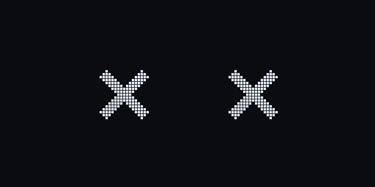
new a usage limit reached
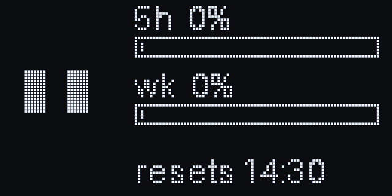
new touch to show usage